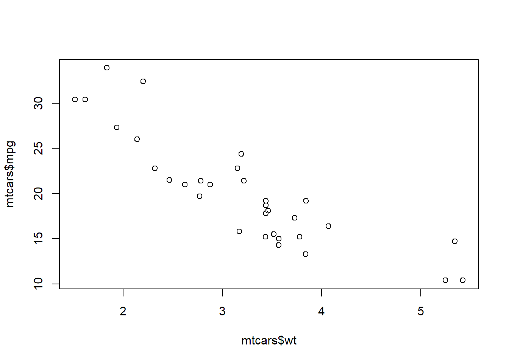

เกริ่น
ขั้นตอนแรกของการวิเคราะห์ข้อมูล คือ การนำเข้าข้อมูลเข้าสู่โปรแกรม (data import) ข้อมูลนั้นเราเป็นคนบันทึกเอง
หรือคนอื่นบันทึกก็ได้ ข้อมูลถูกจัดเก็บในหลายรูปแบบ ที่เราคุ้นเคยกันก็มีข้อมูลที่ถูกจัดเก็บในรูปแบบตาราง หรือ
spreadsheet เช่น microsoft excel หรือ google sheet
RStudio ได้ทำสรุปคำสั่งต่าง ๆ ที่ใช้นำเข้าข้อมูลไว้ที่ cheatsheet (cheatsheet จริง ๆ ก็คือ โพยเวลาเราจดเข้าห้องสอบนั่นเอง เราจะจดแบบกระชับ อยู่ในกระดาษ 1-2 หน้า เห็นแล้วเข้าใจได้เลย ซึ่งมันดีมาก ๆ เลย มี cheatsheet เจ๋งๆ อีกหลายอันเลย สนใจคลิ๊ก)
ไฟล์ csv
plot(x = mtcars$wt, y = mtcars$mpg)
หัวข้อ 2
head(mtcars)## mpg cyl disp hp drat wt qsec vs am gear carb
## Mazda RX4 21.0 6 160 110 3.90 2.620 16.46 0 1 4 4
## Mazda RX4 Wag 21.0 6 160 110 3.90 2.875 17.02 0 1 4 4
## Datsun 710 22.8 4 108 93 3.85 2.320 18.61 1 1 4 1
## Hornet 4 Drive 21.4 6 258 110 3.08 3.215 19.44 1 0 3 1
## Hornet Sportabout 18.7 8 360 175 3.15 3.440 17.02 0 0 3 2
## Valiant 18.1 6 225 105 2.76 3.460 20.22 1 0 3 1